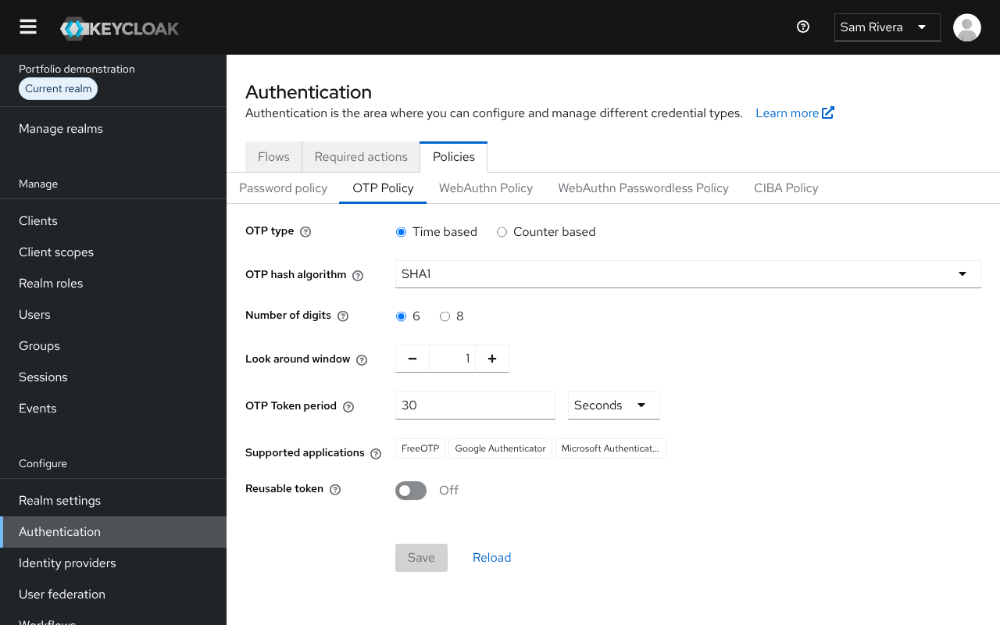

Keycloak OTP Policy: The Settings and Their Defaults
The OTP policy of a realm decides what a one-time password (OTP) looks like in it. It sets how long a code lasts, how many digits it has, and how much clock difference Keycloak forgives. In the admin console, it’s under Authentication > Policies > OTP Policy.
The defaults below are those of a new realm in Keycloak 26.8.2, read from the admin console and from the realm’s settings in the admin REST API. An independent reference, not official Keycloak documentation.

Settings
| Setting | Default | What it decides |
|---|---|---|
| OTP type | Time based | A time-based code changes every period. A counter-based code changes each time the user asks the app for one. |
| OTP hash algorithm | SHA1 | The algorithm the app and Keycloak use to compute a code. The three applications Keycloak names support SHA1. |
| Number of digits | 6 | The length of a code: 6 or 8. |
| Look around window | 1 | How many periods before and after the current one Keycloak also accepts. With 1, a code of the previous or the next period works, and a code of two periods back doesn’t. |
| OTP Token period | 30 seconds | How long a time-based code lasts. |
| Supported applications | FreeOTP, Google Authenticator, Microsoft Authenticator | The applications that Mobile Authenticator Setup tells users to install. |
| Reusable token | Off | Whether a code that has signed someone in can be used again before it expires. |
The Same Settings in the Admin REST API
Each setting is a field of the realm representation, at GET /admin/realms/{realm}.
| Field | Default |
|---|---|
otpPolicyType | totp |
otpPolicyAlgorithm | HmacSHA1 |
otpPolicyDigits | 6 |
otpPolicyLookAheadWindow | 1 |
otpPolicyPeriod | 30 |
otpPolicyCodeReusable | false |
otpPolicyInitialCounter | 0, used only by counter-based codes |
Before You Change a Setting
A change applies only to authenticators set up after it. Each OTP credential keeps the type, the digits, the period, and the algorithm it was set up with. When I changed a realm from 6 to 8 digits, a phone set up before the change still signed in with its 6-digit codes. To move every user to the new policy, reset each user’s authenticator: Reset a user’s OTP credential in Keycloak.